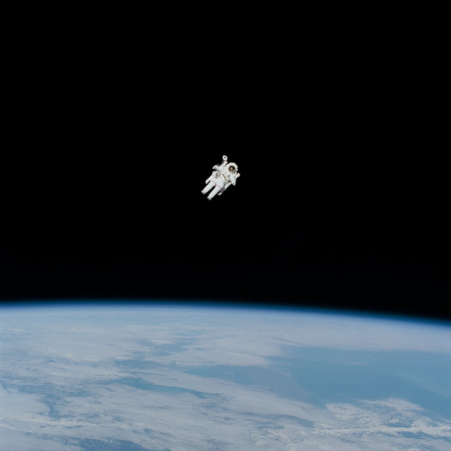
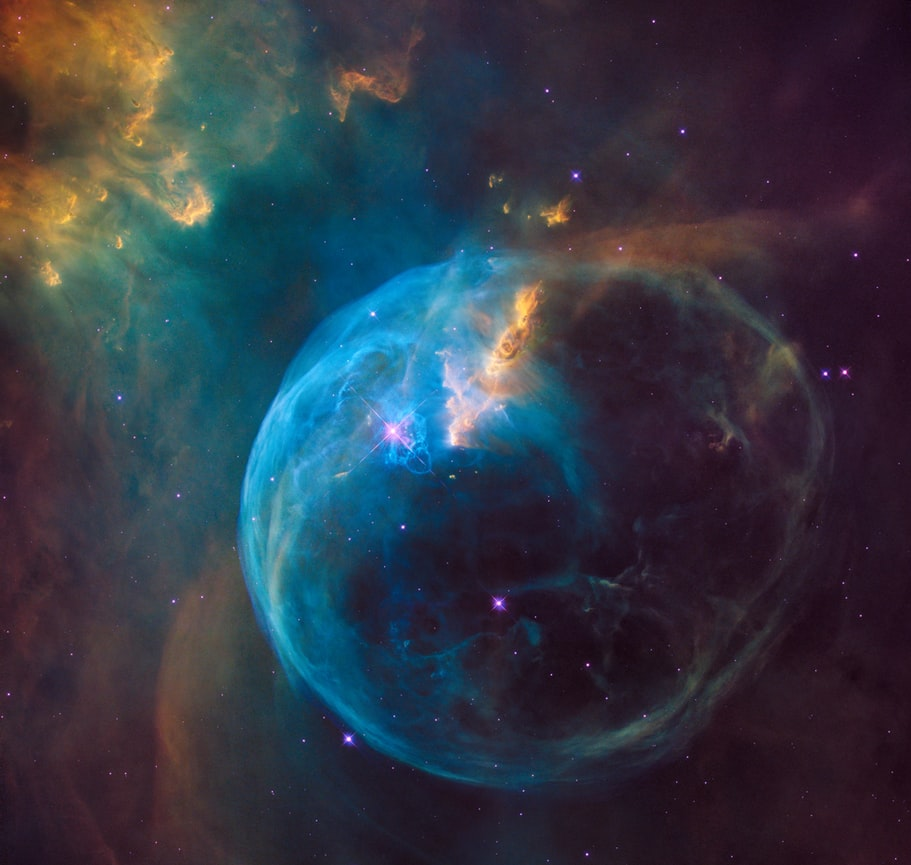
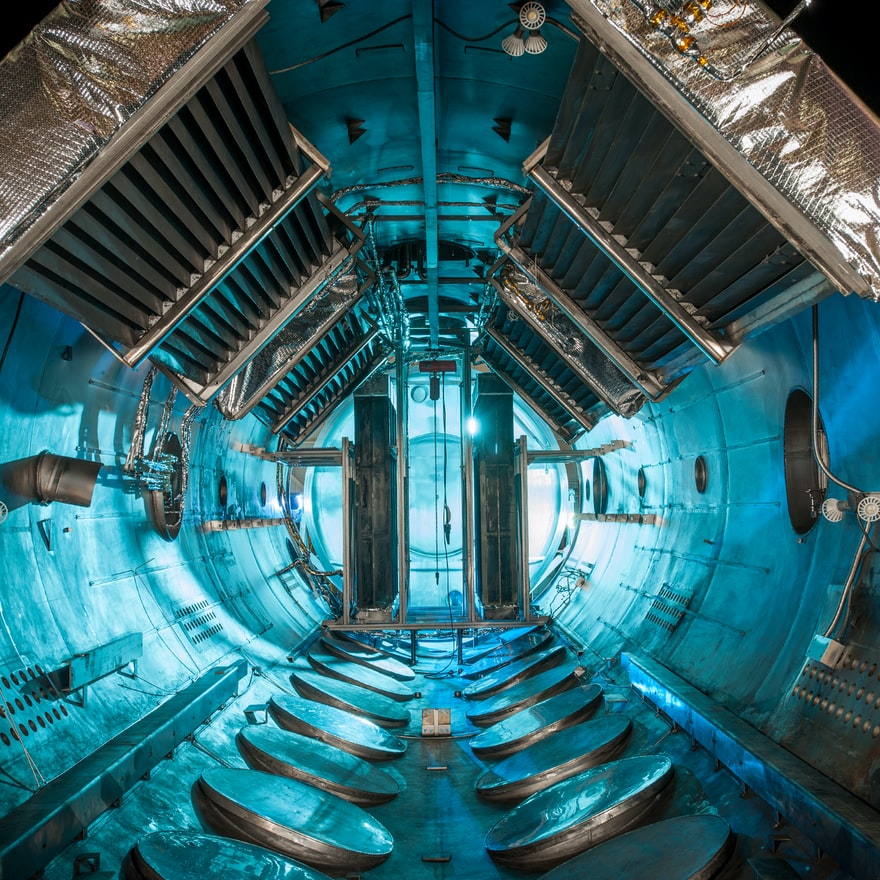
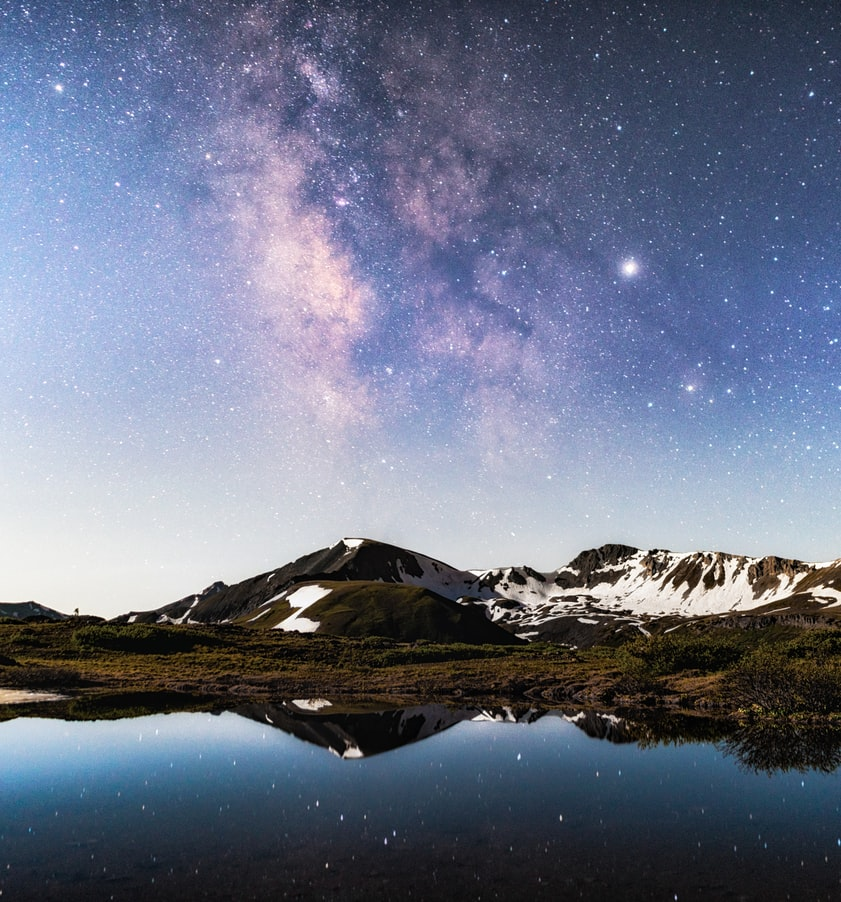
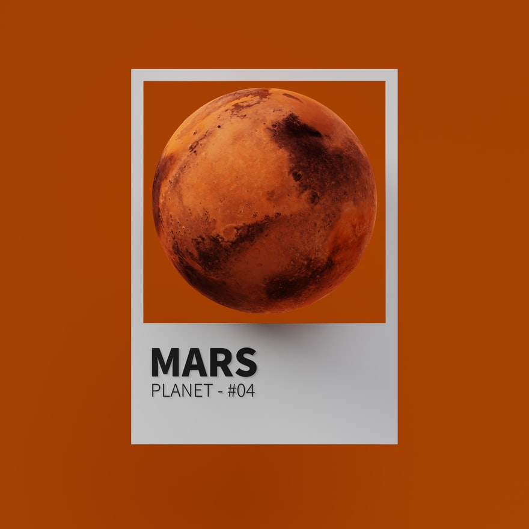
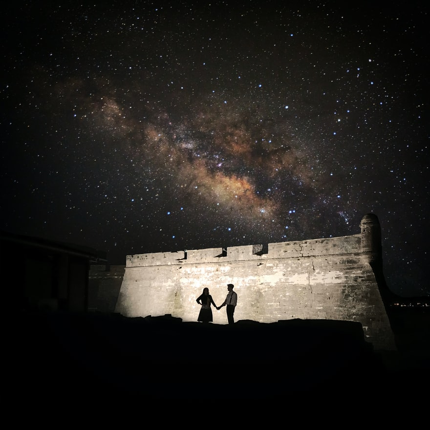
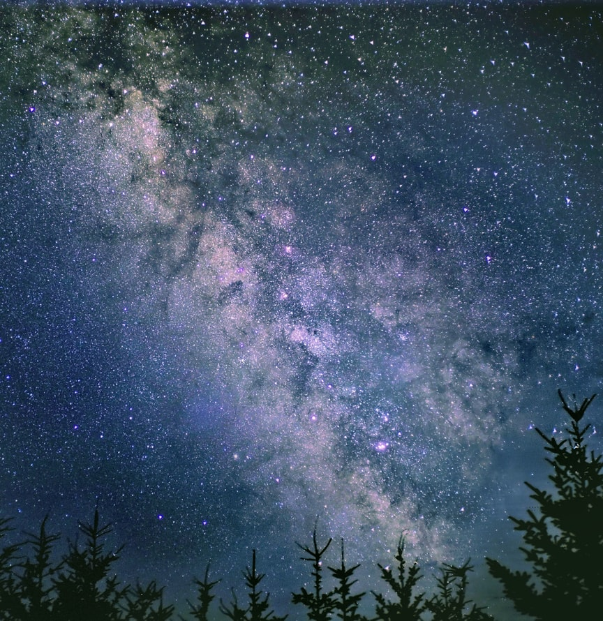

Video: NASA in 2022—The Future is Now

2021 Disasters: A Look Back

NASA Invites Media to NOAA’s Weather Observing Satellite Launch
2021 Disasters: A Look Back

NASA Invites Media to NOAA’s Weather Observing Satellite Launch
The 9 Most Memorable Downlink Moments of 2021

The James Webb Telescope Lights Up the Sky During Launch
NASA’s 2021 Included Mars Landing, First Flight, Artemis, More

NASA Armstrong 2021 Milestones

NASA Glenn Continued Research in 2021 for Space Exploration and Next-Gen Aeronautics
Track the Webb Telescope and Follow Its Deployment